이번 포스트에서는 간단한 스프링 부트(Spring Boot) 애플리케이션을 만들고 컨테이너화(Containerize)하는 방법을 알아봅니다. 그리고 다양한 툴을 이용해 도커 이미지를 지속적으로 빌드하고 배포할 수 있는 CI/CD 환경을 구성하고 쿠버네티스(Kubernetes) 클러스터에 배포하는 과정을 살펴봅니다.
살펴볼 내용은 다음과 같습니다.
- 컨테이너화 Containerization
- 스프링 부트 컨테이너화하기
- 도커 이미지 기반 CI/CD 환경 구성하기
- 첫 번째 환경: Google Cloud Build
- 두 번째 환경: GitLab + GKE
- 정리
컨테이너화 Containerization
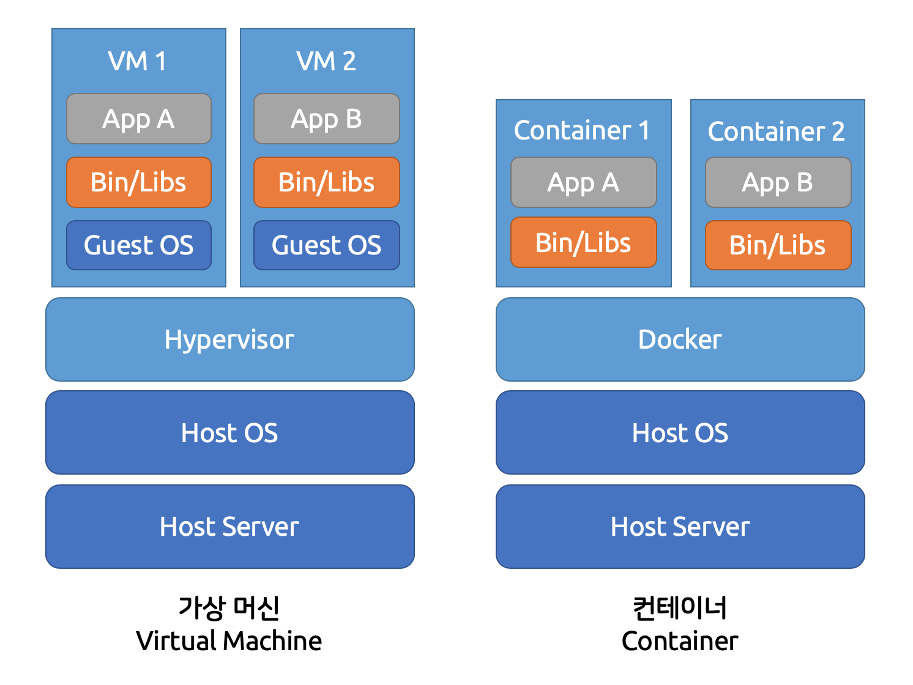
컨테이너화는 애플리케이션을 컨테이너로 감싸는 작업을 말합니다. 컨테이너는 가상 머신(Virtual Machine)과는 다르게 게스트 OS 없이 호스트 OS 의 자원을 공유하므로 더 빠르고 리소스 사용이 효율적인 가상화 방식입니다. 이번 포스트에서는 대표적인 가상화 SW인 도커(Docker)로 컨테이너를 만듭니다. 도커로 애플리케이션과 해당 실행 환경을 감싸면 이미지 형태로 빌드할 수 있습니다. 따라서 도커만 설치되어 있으면 어디든 동일한 환경에서 애플리케이션을 실행할 수 있으므로 개발 및 배포, 운영 시 매우 용이합니다.
가상화와 도커에 대한 자세한 내용은 다음 포스트를 참고하세요.
스프링 부트 컨테이너화하기
먼저 스프링 부트 애플리케이션을 만들고 컨테이너화 해봅시다.
환경 준비
실습에 사용할 리눅스 머신이 필요합니다. Mac, 가상 머신, AWS EC2 등 원하는 환경을 준비합니다. 이번 포스트에서는 로컬 환경에서 간단하게 VM을 사용할 수 있는 VirtualBox 와 Vagrant 로 실습 환경을 구성합니다. VirtualBox 는 VM을 만들고, Vagrant 는 VM 이미지와 설정 파일(Vagrantfile)로 가상 머신을 쉽게 설정하고 찍어낼 수 있습니다. 두 SW 를 설치한 후 실습을 진행합니다.
원하는 경로에 폴더를 만들고 초기화합니다.
1 | $ vagrant init |
생성된 Vagrantfile 을 수정합니다.
1 | Vagrant.configure("2") do |config| |
config.vm.box: 가상 환경에서 사용할 박스 이미지를 설정합니다. CentOS 7을 사용합니다. Vagrant Cloud 에서 원하는 박스 이미지를 검색할 수 있습니다.config.vm.network "forwarded_port": 게스트의80과 호스트의8000포트를 연결합니다.config.vm.network "forwarded_port": 게스트의80과 호스트의8000포트를 연결합니다.config.vm.provision "docker": 도커를 자동으로 설치합니다. 따라서 VM에 따로 도커를 설치할 필요가 없습니다.
vagrant up 으로 VM 을 실행합니다.
1 | vagrant up |
vagrant ssh 로 VM에 SSH 접속할 수 있습니다. 접속 후에는 sudo su - 를 이용해 root 로 접속할 수 있습니다.
마지막으로 실습을 편하게 진행하기 위해 Java 와 Git 도 설치합시다.
1 | sudo su - |
이제 Docker, Java, Git이 설치된 VM 을 사용할 수 있습니다.
스프링 부트 애플리케이션 만들기
실습에 사용할 간단한 스프링 부트 애플리케이션을 작성합니다. Spring Initializr 로 프로젝트를 만들면 필요한 초기 설정을 쉽게 구성할 수 있습니다.
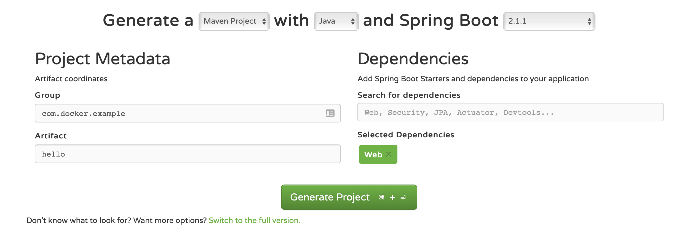
위 그림과 같이 설정한 후 Generate Project 로 생성된 압축 파일을 다운로드합니다.
압축 파일을 풀고 해당 폴더에서 mvnw spring-boot:run으로 바로 실행해봅시다. 여기선 maven 을 사용하지만 gradle 을 사용해도 좋습니다.
1 | $ ./mvnw spring-boot:run |
controller 패키지를 만들고 / 요청을 받을 HelloController 를 만듭니다.
1 | package com.docker.example.hello.controller; |
pom.xml 파일에 플러그인 설정을 추가합니다. 해당 설정이 없으면 VM 이나 컨테이너 환경에서 빌드(테스트) 시 에러가 발생합니다.
1 | <plugin> |
Vagrantfile 에 파일을 옮기는 설정을 추가합니다.
1 | config.vm.provision "file", source: "./hello", destination: "$HOME/hello" |
Vagrant 를 프로비저닝해서 소스를 옮깁니다.
1 | $ vagrant up |
환경과 소스를 모두 준비했습니다.
컨테이너로 감싸기
이제 해당 애플리케이션을 감싸기 위한 실행 환경을 정의합니다. 이를 Dockerfile 에 정의합니다.
Dockerfile 을 작성합니다.
1 | FROM openjdk:8-jre-alpine |
도커는 베이스 이미지(FROM)를 기반으로 설정한 항목을 수행하면서 변경 사항을 이미지 레이어로 저장합니다.
FROM: 가벼운 리눅스인 alpine 에 openjdk 8 이 설치된 이미지입니다.COPY: 컨테이너 안으로 파일을 복사합니다.ENTRYPOINT: 컨테이너를 실행할 때 수행할 명령어 입니다.
먼저 메이븐 빌드를 수행합니다.
1 | ./mvnw install |
도커 이미지를 빌드합니다.
1 | docker build -t myorg/myapp . |
그러면 myorg/myapp 이라는 태그가 달린 이미지가 생성됩니다.
도커 이미지를 실행합니다.
1 | docker run -d -p 8000:8080 myorg/myapp |
-d: 백그라운드에서 실행합니다.-p:<호스트 포트>:<컨테이너 포트>형식으로 작성합니다.a6a795580728: 실행 시 해당 컨테이너 ID가 출력됩니다.
도커가 실행되는 컨테이너를 확인합니다.
1 | CONTAINER ID IMAGE COMMAND CREATED STATUS PORTS NAMES |
접속을 확인해봅시다. 고정 IP로 설정한 http://192.168.33.10:8000 로 접속하면 화면을 볼 수 있습니다.
1 | curl localhost:8000 |
컨테이너 내부로 들어가면 app.jar 를 확인할 수 있습니다.
1 | docker run -it --entrypoint /bin/sh myorg/myapp |
Dockerfile 개선하기
스프링 애플리케이션을 아주 쉽게 컨테이너로 만들었습니다. 하지만 지금 이미지는 조금 비효율적입니다. 도커가 이미지를 만드는 방식과 관련이 있습니다.
도커는 이미지를 빌드하는 과정을 이미지를 여러 겹의 레이어로 구성하고, 수정이 있는 레이어만 다시 작업합니다. 나머지 수정이 없는 레이어는 캐시해놓은 것을 사용하기 때문에 빠르게 빌드할 수 있습니다. 하지만 우리 JAR 파일 안에는 각종 디펜던시가 함께 들어가 있기 때문에 도커 이미지에는 하나의 레이어만 생성되고, 애플리케이션이 수정될 때마다 해당 레이어가 변경됩니다.
다음은 이미지의 레이어를 docker inspect 명령어로 확인한 모습입니다. 마지막 레이어가 우리 애플리케이션의 레이어입니다.
1 | "Layers": [ |
이제 하나로 구성된 레이어를 여러 개의 레이어로 나눠봅시다.
먼저 디펜던시를 각각 복사할 수 있도록 폴더를 생성하고 JAR 압축을 풉니다.
1 | mkdir target/dependency |
Dockerfile 을 수정합니다. 각 디펜던시를 COPY 하는 작업이 하나의 레이어가 됩니다.
1 | FROM openjdk:8-jre-alpine |
다시 도커 이미지를 빌드합니다.
1 | docker build -t myorg/myapp . |
이미지를 확인해보면 레이어가 늘어난 것을 확인할 수 있습니다.
1 | "Layers": [ |
이 방법은 압축을 해제하는 과정이 필요하므로, 이후 실습에서는 편의를 위해 첫 번째 방법으로 진행합니다.
도커 이미지 기반 CI/CD 환경 구성하기
이번에는 코드를 관리하고 도커 이미지 기반의 CI/CD 환경을 구성해봅시다.
구성 요소
- 코드와
Dockerfile을 함께 관리하고 CI 서버를 이용해 코드가 푸시될 때마다 해당 코드를 도커 이미지로 빌드합니다. - 빌드한 이미지는 이미지 레지스트리(Image Registry)에 따로 저장해서 보관합니다.
- 빌드한 이미지를 컨테이너로 쿠버네티스(Kubernetes) 클러스터에 배포합니다.
필요한 구성 요소는 다음과 같습니다.
| 도구 | 서비스 |
|---|---|
| 소스 코드 관리 | GitHub, GitLab, AWS CodeStar, Google Cloud Source Repository, etc. |
| 코드를 push 할 때마다 자동으로 빌드하고 배포할 CI/CD 파이프라인 | AWS CodePipeline, Google Cloud Build, GitLab CI/CD, Jenkins, etc. |
| 빌드한 이미지를 저장할 프라이빗 도커 레지스트리(Private Docker Registry) | Amazon Elastic Container Registry, Google Container Registry, GitLab Container Registry, etc. |
| 빌드 결과를 배포할 쿠버네티스(Kubernetes) 클러스터 | Google Kubernetes Engine, Amazon Elastic Container Service for Kubernetes, etc. |
이를 구성하는 방법은 여러가지가 있습니다. 이번 포스트에서는 다양한 시나리오를 살펴보기 위해 다음과 같이 세 가지 방법으로 구성해보겠습니다.
- Google Cloud Build
- GCP와 Dockerfile
- GItLab + GKE
쿠버네티스 Kubernetes
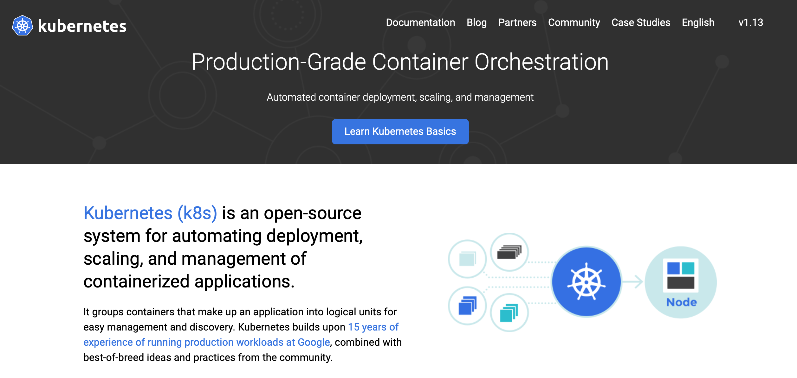
도커 컨테이너는 도커만 설치되어 있으면 동작합니다. 하지만 분산 환경에서 많은 컨테이너를 관리하는 것은 쉽지 않습니다. 따라서 주로 도커 컨테이너를 그냥 사용하기보다는 쿠버네티스라는 컨테이너 플랫폼 위에서 실행합니다.
쿠버네티스는 분산 환경의 많은 컨테이너를 쉽게 관리할 수 있는 오케스트레이션(Orchestration) 툴로 알려져 있습니다. 하지만 쿠버네티스는 단순한 오케스트레이션 툴을 넘어 하나의 플랫폼으로 빠르게 발전했습니다. 이제는 많은 기업들이 컨테이너 운영 환경에 쿠버네티스를 도입해 사용하고 있습니다. 자세한 내용은 이후 쿠버네티스 관련 포스트에서 따로 다루도록 하겠습니다.
- 여러 노드를 하나의 노드처럼 관리
- 노드의 부하를 확인해 컨테이너를 어디에 배포할 지 스케쥴링(scheduling)
- 컨테이너의 상태를 체크해 자동 복구(self healing)
- 부하에 따라 오토 스케일링(auto scaling)
쿠버네티스는 구글에서 시작된 오픈소스로, 구글의 15년 이상의 컨테이너 운영 경험이 녹아 있습니다. Google Kubernetes Engine 은 Google Cloud Platform 에서 제공하는 완전관리형(fully-managed) 쿠버네티스 클러스터로 Google SRE 가 관리하며 쿠버네티스의 최신 버전을 자동으로 적용하기 때문에 다른 관리 없이 편하게 사용이 가능합니다.
이번 포스트는 쿠버네티스 클러스터를 구성하고 관리하는 것이 목적이 아니므로 GKE 로 애플리케이션을 배포하겠습니다.
첫 번째 환경: Google Cloud Build
첫 번째로 구성해볼 환경은 GitHub 와 Google Cloud Build 를 이용한 구성입니다.
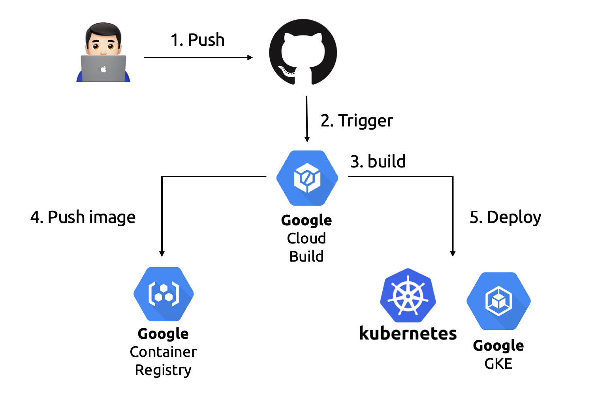
- 개발자가 코드를 작성하고 GitHub 으로 푸시합니다.
- 코드가 변경될 때마다 GitHub 와 연동된 Cloud Build 트리거가 실행됩니다.
cloudbuild.yaml에 정의된 빌드 작업을 수행합니다.- 빌드 결과 생성된 도커 이미지를 컨테이너 레지스트리에 푸시합니다.
- 이미지를 GKE 클러스터에 배포합니다.
1. GitHub 저장소 준비하기
먼저 코드를 저장할 GitHub 부터 준비합시다.
GitHub에 새로운 저장소를 생성합니다.
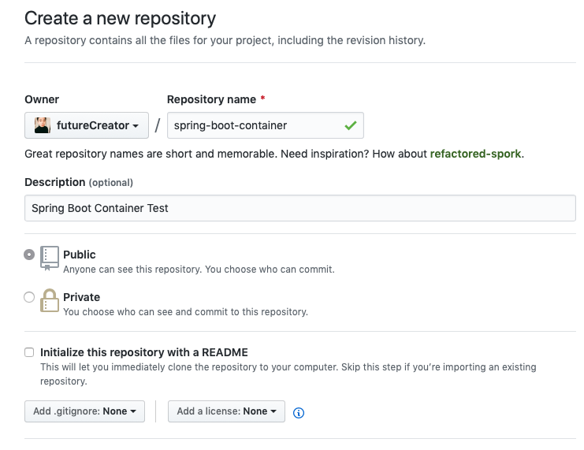
소스에서 Git 을 초기화합니다.
1 | git init |
새로 만든 저장소를 remote 저장소로 추가합니다.
1 | git remote add origin https://github.com/futureCreator/spring-boot-container.git |
저장소의 내용을 커밋하고 푸시합니다.
1 | echo "# spring-boot-container" >> README.md |
코드는 모두 준비됐습니다.
2. 트리거 생성하기
Google Cloud Build는 따로 빌드 환경을 구축할 필요 없이 간단하게 빌드할 수 있고, 구글의 서비스와 쉽게 통합할 수 있는 빌드 서비스입니다. GitHub와 연동해서 소스가 변경될 때 빌드를 트리거해서 시작하고, 빌드 과정을 cloudbuild.yaml에 정의하면 자동으로 빌드가 생성됩니다.
이후 실습에서 GCP 를 사용하면서 요금이 발생할 수 있습니다. GCP 는 가입 시 1년 동안 사용할 수 있는 $300 크레딧을 제공하므로 실습에는 큰 문제가 없을 겁니다. 회원 가입 후 새로운 프로젝트를 생성합니다.
GCP 는 사용하고자 하는 서비스의 API를 미리 활성화해야 합니다. API 매니저로 접속해서 Cloud Build API, Kubernetes Engine API, Container Registry API 등 실습하면서 필요할 때마다 해당 API 를 활성화하면 됩니다.
이제 빌드 트리거를 생성해봅시다. 먼저 GCP 검색 창에 ‘Cloud 빌드’를 검색하고 트리거 메뉴로 들어갑니다. 트리거 만들기를 누르고 GitHub 를 선택합니다. 인증을 하면 해당 계정의 저장소가 나타나는데 위에서 만든 저장소를 선택합니다.
그리고 다음과 같이 트리거를 생성합니다. cloudbuild.yaml 파일로 빌드를 설정할 겁니다.
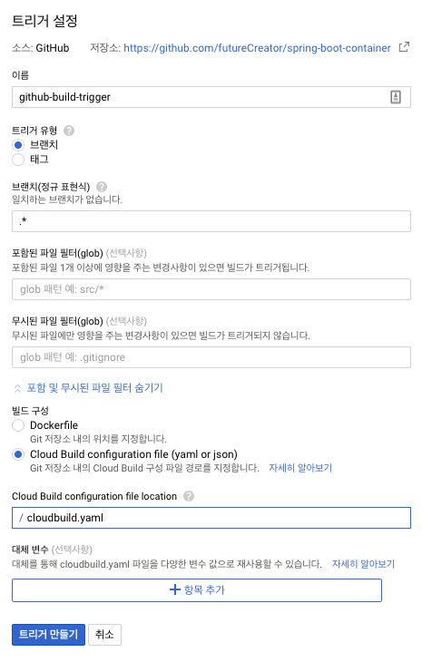
이제 모든 브랜치에 푸시될 경우 해당 트리거가 실행됩니다. 물론 콘솔에서 직접 수동으로 실행할 수도 있고 터미널에서 실행할 수도 있습니다.
3. 빌드하기
이제 빌드 작업을 cloudbuild.yaml에 작성할 차례입니다.
1 | steps: |
- 각 스텝의
name은 빌드에 사용하는 이미지를 나타냅니다(cloud-builders). 해당 이미지의 컨테이너에서 빌드가 수행됩니다. - 먼저
mvn이미지에서install작업이 수행되고docker이미지에서 빌드를 수행합니다.
파일을 생성하고 푸시하면 트리거가 작동해서 빌드가 수행됩니다.
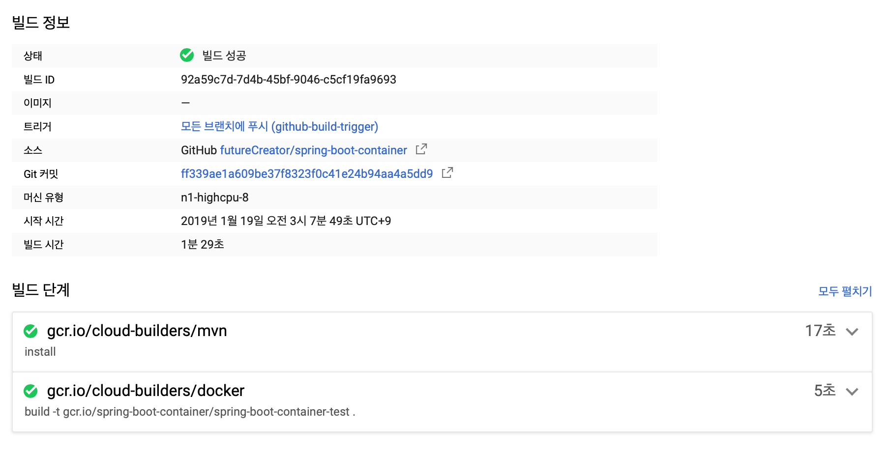
4. Container Registry 에 이미지 푸시하기
컨테이너의 장점 중 하나는 해당 이미지를 재활용할 수 있다는 점입니다. 자주 사용하는 이미지를 저장해놓고 언제든 내려받아 컨테이너로 실행할 수 있습니다. 이러한 이미지 저장소를 Docker Registry 또는 Container Registry 라고 합니다. Docker Hub 는 도커에서 운영하는 대표적인 컨테이너 레지스트리입니다.
이 외에도 클라우드 프로바이더는 private한 레지스트리를 제공합니다. AWS 의 Elastic Container Registry, GCP 의 Google Container Registry 가 있습니다. 이러한 레지스트리는 취약점 스캔, 위험한 이미지 자동 잠금, 자사 서비스와의 통합 등 부가 기능을 제공합니다. 특히 컨테이너는 애플리케이션과 환경을 함께 저장하므로 보안에 취약한데 이를 보완해주는 기능을 제공합니다.
Container Registry 를 사용하는 방법은 간단합니다. 위에서 본 것처럼 도커 이미지 빌드 시에 [HOSTNAME]/[PROJECT-ID]/[IMAGE]:[TAG] 형태로 태그를 달게 되는데요, 기본적으로 도커 허브(docker.io)가 적용됩니다. 우리는 Google Container Registry 에 맞는 태그를 달고 푸시해주면 됩니다.
cloudbuild.yaml 해당 작업을 추가합시다.
1 | steps: |
- 도커 빌드 시 태그명의
gcr.io가 바로 Google Container Registry 입니다. docker push를 하면 해당 태그에 맞춰서 저장소에 추가됩니다.
빌드 작업 후 컨테이너 이미지가 추가된 것을 확인할 수 있습니다. 새로운 이미지는 latest 라는 태그가 자동으로 추가됩니다.
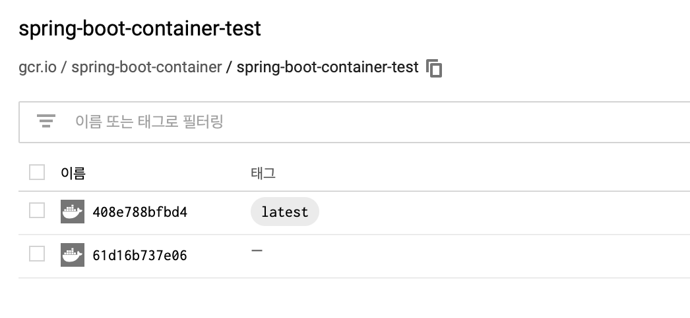
5. Kubernetes Engine 에 배포하기
지금까지 지속적인 통합(Continuous Integration) 환경을 구축했고 지속적인 배포(Continuous Deployment) 환경을 구축해봅시다.
빌드한 이미지를 쿠버네티스 클러스터에 Deployment 오브젝트로 배포합니다. 쿠버네티스의 Deployment 는 컨테이너 단위인 Pod 과 컨테이너의 개수를 유지해주는 ReplicaSet 을 포함하고, 배포 시 롤링 업데이트[1] 을 지원합니다. 또한 Deployment 를 노출(expose)해서 외부에서 접근하는 서비스를 생성할 수 있습니다.
콘솔에서 GKE에 접속해 작업부하 메뉴에서 배포를 클릭해 새로운 배포를 생성합니다.
Google Container Registry 이미지 선택을 클릭해 빌드한 이미지를 선택하고 완료를 클릭해 컨테이너를 추가합니다.
추가 정보를 작성합니다. 클러스터는 기존 클러스터를 생성해도 되지만 새로운 클러스터를 생성하겠습니다.
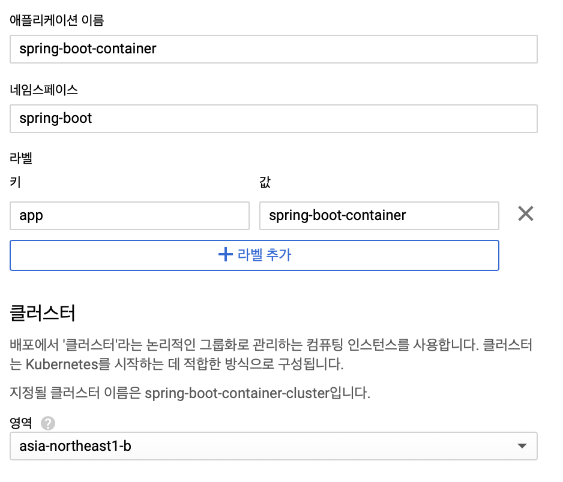
클러스터가 생성되길 기다리면서 IAM에 권한을 추가합시다. Cloud Build의 서비스 계정이 클러스터에 접근해야 하므로 역할(권한)을 추가해줘야 합니다. IAM 및 관리자 메뉴에서 Cloud 빌드 서비스 계정의 권한에 Kubernetes Engine 관리자 역할을 추가합니다.
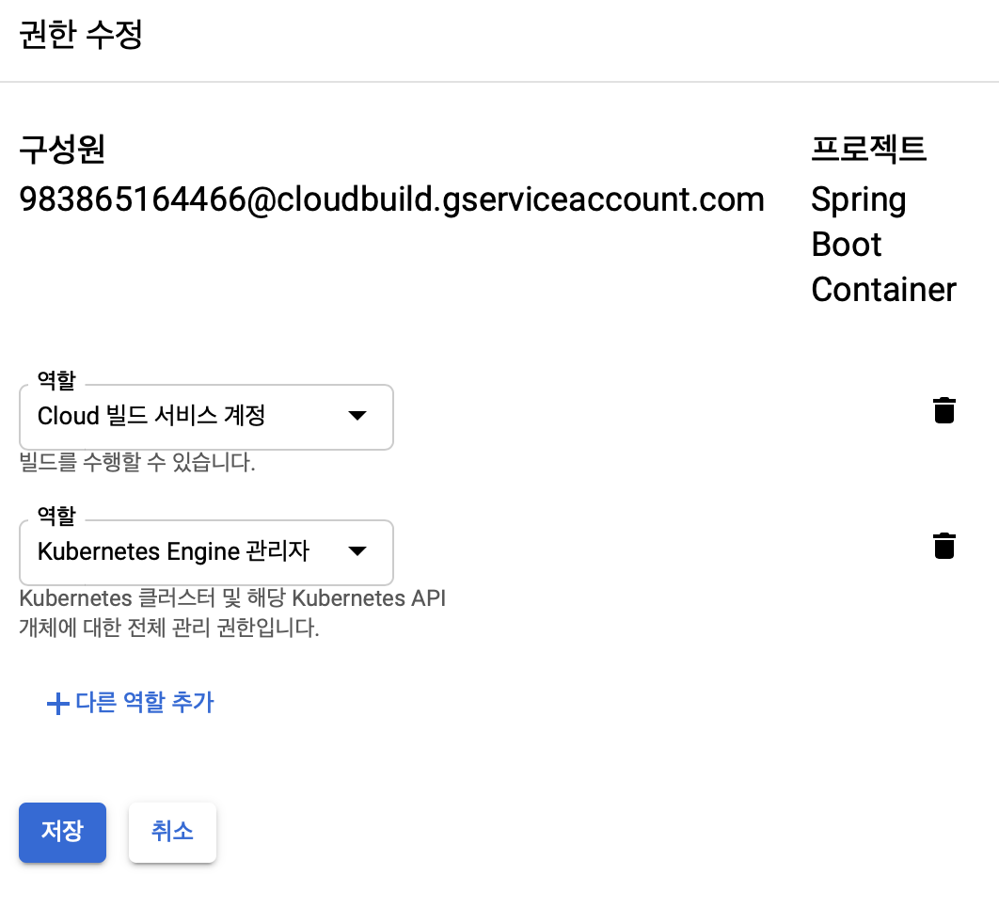
cloudbuild.yaml 에 배포 작업을 추가합시다.
1 | steps: |
kubectl set image명령어를 이용해 컨테이너 이미지를 변경합니다.CLOUDSDK_COMPUTE_ZONE: 클러스터를 생성한 지역입니다.CLOUDSDK_CONTAINER_CLUSTER: 생성한 클러스터명입니다.-n spring-boot: 해당 Deployment 가 있는 namespace 를 지정합니다.
이제 빌드 후 이미지가 새로 생성되면, 클러스터에서 새로운 이미지를 기반으로 Pod 이 새로 생성됩니다.
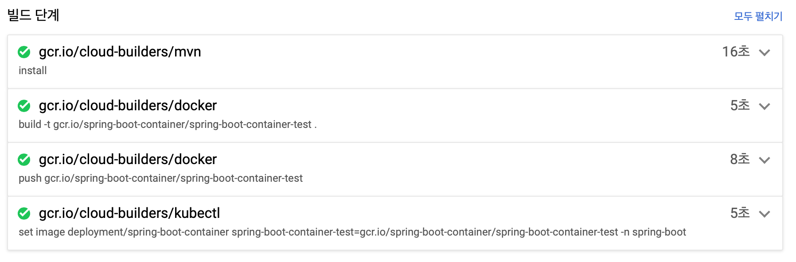
새로운 이미지가 배포되어 Pod이 새로 생성된 것을 볼 수 있습니다.
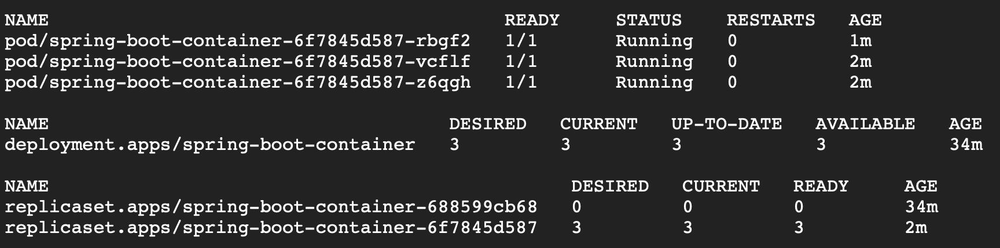
첫 번째 환경으로 GitHub와 Cloud Build를 이용해서 배포하는 환경을 구축해봤습니다. 각 단계별로 수정해볼만한 항목입니다.
- GitHub와 연동한 저장소는 Google Code Source Repository 에서도 확인할 수 있습니다. 물론 GitHub 대신 여기서 저장소를 생성해서 사용할 수도 있습니다.
cloudbuild.yaml에서 빌드 작업을 정의했습니다. 빌드 작업을 하나의 YAML 파일로 관리할 수 있어 편리했습니다. 메이븐 빌드는Dockerfile에서 수행하도록 수정할 수도 있습니다.- 컨테이너 레지스트리는 다른 레지스트리를 사용할 수도 있지만 GCP 서비스와 연동이 잘 되는 Google Container Registry를 사용했습니다. 또한 취약점 검사를 적용해볼 수도 있고, 해당 이미지를 공개하면 다른 곳에서도 사용할 수 있습니다.
- GKE는 쿠버네티스에 친숙하지 않더라도 쉽게 사용할 수 있도록 웹 UI에서 다양한 기능을 제공하고 있습니다. 이 외에도 Deployment 를 노출해 서비스를 만들 수도 있습니다.
- 빌드 과정에서
mvn test를 수행하며 단위 테스트를 수행합니다. 실운영 환경에서는 빌드 과정에서 빌드 및 통합 테스트 스텝을 추가하는 것이 좋습니다.
두 번째 환경: GitLab + GKE
이번에는 GitLab 위주의 환경을 구성해보겠습니다.
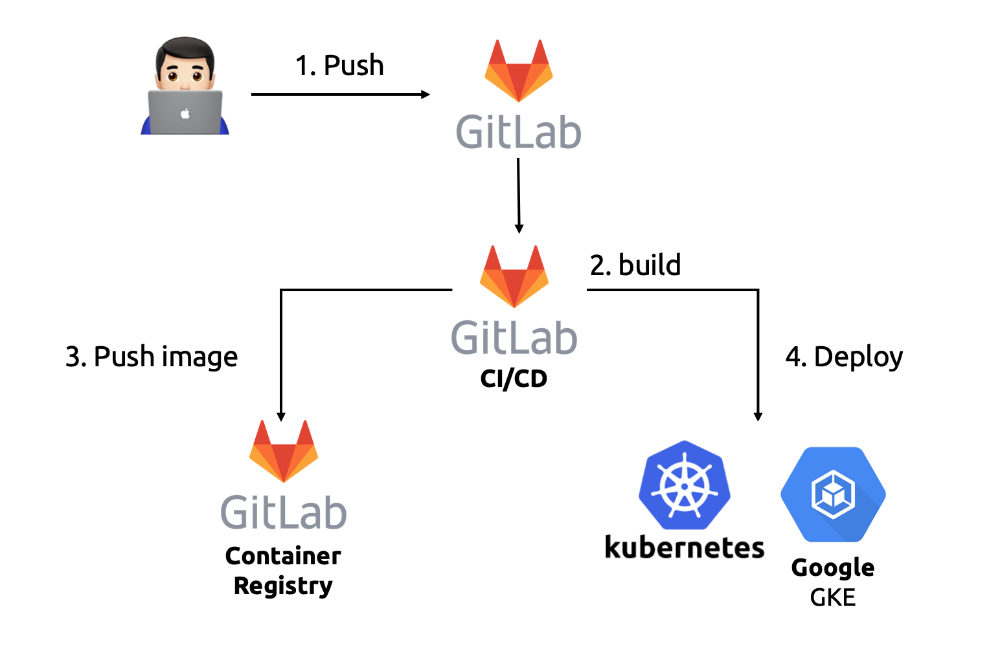
GitLab은 GitHub에 비해 많이 사용되진 않지만 상당히 유용한 도구입니다. GitHub 처럼 다른 도구와 연동을 많이 제공하진 않지만 GitLab 자체에서 CI/CD 기능을 지원하고 Container Registry 도 지원합니다. 또한 GKE 와 연동해 클러스터의 상태를 바로 확인할 수 있습니다. 코드 저장소에서 빌드 파이프라인과 배포 상태까지 확인하는 것은 상당히 유용합니다.
1. GitLab 저장소 준비하기
두 번째 환경은 대부분 GitLab에서 지원하는 기능을 사용하기 때문에 설정이 더 간단합니다.
GitLab 저장소를 새로 만듭니다. 그리고 위에서 사용한 소스에 origin 을 새로 추가하고 푸시합니다.
1 | git remote add gitlab_origin https://gitlab.com/futureCreator/spring-boot-container.git |
저장소는 간단하게 준비했습니다.
2. 메이븐 빌드하기
먼저 메이븐 빌드를 먼저 정의합니다.
코드를 푸시하면 GitLab 대시보드에서 다음과 같은 화면을 볼 수 있습니다.
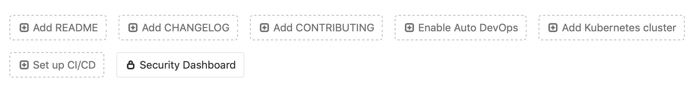
Set up CI/CD 를 클릭하면 .gitlab-cicd.yml 파일을 작성하는 화면으로 넘어갑니다. 위에서 작성한 cloudbuild.yaml 처럼 빌드 작업을 정의하는 파일입니다. 해당 파일을 작성하면 자동으로 CI/CD 가 적용됩니다.[2]
1 | image: docker:latest |
해당 커밋에 대해 빌드 파이프라인이 생성됩니다. CI/CD > Pipeline 화면에서 파이프라인의 빌드와 잡을 확인할 수 있습니다.
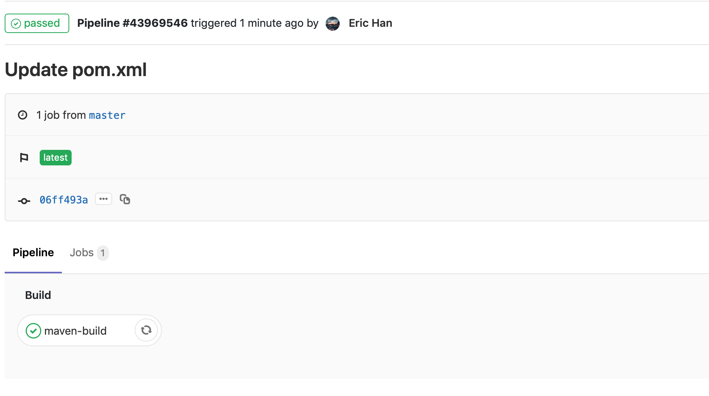
cloudbuild.yaml 과 문법은 다르지만 어떤 내용인지는 쉽게 알아 볼 수 있습니다.
3. 도커 빌드하고 Container Registry 에 푸시하기
이번엔 도커 빌드 스테이지를 추가하고 GitLab 저장소에 자동으로 생성되는 컨테이너 레지스트리에 도커 이미지를 푸시하겠습니다.
컨테이너 레지스트리는 저장소의 Registry 메뉴에 있습니다. 간단한 사용법을 확인할 수 있습니다.
.gitlab-cicd.yml 파일에 도커 빌드 작업을 추가합니다.
1 | image: docker:latest |
빌드 결과를 확인합니다.
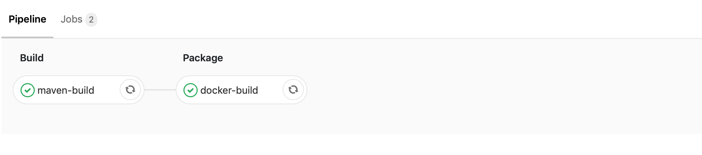
컨테이너 레지스트리에서 빌드된 이미지를 확인할 수 있습니다.
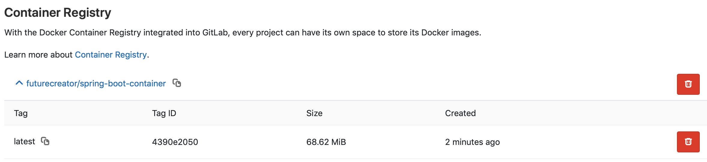
이제 코드가 변경될 때마다 빌드가 수행되고 이미지가 레지스트리에 추가됩니다.
4. GKE 에 배포하기
마지막으로 쿠버네티스 클러스터에 배포할 차례입니다. 클러스터는 이전 실습에서 생성한 클러스터를 활용하면 되겠네요.
배포 과정 자체는 비슷하지만 GitLab 이 외부 서비스이다 보니 조금 더 손이 갑니다. cloud-sdk 로 클러스터에 접속하기 때문에 인증 절차가 필요합니다.
먼저 GCP의 IAM Service Account Credentials API > 사용자 인증 정보 에서 서비스 계정의 키를 JSON 으로 생성합니다.
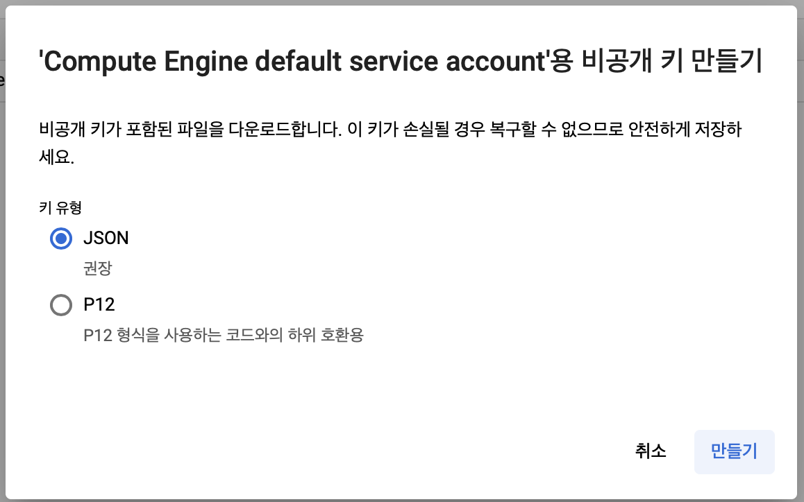
그러면 JSON Key를 자동으로 내려받습니다. 해당 JSON Key 내용을 복사해서 GitLab 의 Settings > CI/CD > Environment variables 에 GOOGLE_KEY 로 추가합니다.
클러스터에서 사전 작업을 합시다. 먼저 해당 애플리케이션을 배포할 네임스페이스를 생성합니다.
1 | kubectl create namespace spring-boot-2 |
GitLab 레지스트리에서 이미지를 받아오기 위한 계정 정보를 Secret 객체로 만들어야 합니다. 각 값은 여러분의 계정으로 작성하면 됩니다.
1 | kubectl create secret docker-registry registry.gitlab.com --docker-server=https://registry.gitlab.com --docker-username=yourusername --docker-password=yourpassword --docker-email=youremail -n spring-boot-2 |
이제 배포를 합시다. 첫 번째 환경을 구성할 때는 미리 배포가 되어 있어서 배포된 이미지를 교체하는 kubectl set image 명령어를 사용했습니다. 이번에는 변경 사항을 파일로 적용하는 kubectl apply -f 명령어를 이용하기 위해 소스 폴더 루트에 deployment.yaml 파일을 추가합니다.
1 | apiVersion: apps/v1 |
- 내용을 살펴보면 첫 번째 환경의 배포 YAML 과 비슷합니다.
- 다른 점은 배포할 네임스페이스, 이미지, 그리고 이미지를 내려받을 때 사용할
imagePullSecrets설정입니다.
이제 .gitlab-cicd.yml 파일에 배포 과정을 추가합니다.
1 | image: docker:latest |
gcloud를 이용해 클러스터에 접속합니다. 접속이 안될 경우GOOGLE_KEY, 프로젝트명, 지역, 클러스터 이름 등 접속 정보를 확인합니다.- 우리가 작성한
deployment.yaml을 이용해 변경 사항을 배포합니다.
빌드 결과를 확인합니다.
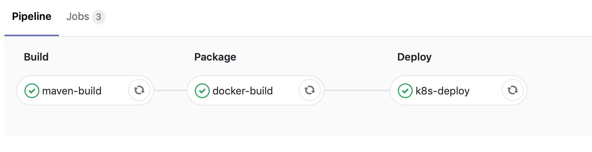
클러스터에 접속해 배포 결과를 확인합니다.
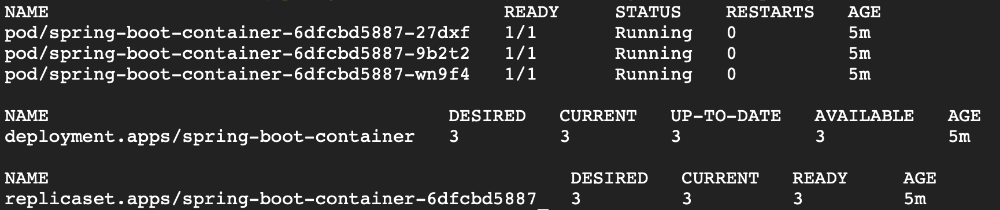
이번에는 GitLab 의 서비스를 주로 이용해서 CI/CD 환경을 구성했습니다. Cloud Build 와 비교했을 때 서비스가 무료이고 GitLab 안에서 대부분 해결할 수 있다는 장점이 있습니다(물론 GitLab 도 특정 서비스는 유료입니다). 또한 해당 서비스를 시각적으로 파이프라인으로 볼 수 있는 것도 장점입니다.
정리
이번 포스트에서는 간단한 스프링부트 애플리케이션을 작성해서 컨테이너로 만들고 CI/CD 환경을 구성했습니다. 코드가 수정될 때마다 빌드하고 원하는 환경에 배포까지 쉽게 할 수 있었습니다. 기존에 많이 사용하는 Jenkins 는 별도의 서버를 구성하거나 쿠버네티스 클러스터에 별도의 컨테이너를 띄워야 합니다. 그래서 최대한 쉽게 접근해서 구성할 수 있는 환경 위주로 실습했습니다.
실습에 사용한 코드는 다음 저장소에서 확인할 수 있습니다.
- https://github.com/futureCreator/spring-boot-container
- https://gitlab.com/futureCreator/spring-boot-container
참고
- Spring Boot in Conatiner | Spring.io
- Google Cloud Build Docs | Google Cloud Platform
- GItLab Continuous Intergration (GitLab CI/CD) | GitLab Docs
Related Posts
- 도커 Docker 기초 확실히 다지기
- 개발자를 위한 인프라 기초 총정리
- AWS 자격증 준비하기
- AWS re:Invent 2018 한 방에 정리하기
- 개발자를 위한 쿠버네티스(Kubernetes) 클러스터 구성하기(Kubeadm, GCE, CentOS)
- 1.롤링 업데이트(Rolling Update)란 기존 서비스를 유지하면서 업데이트하기 위한 방법으로, 여러 개의 인스턴스가 있을 때 하나씩 새로운 버전의 인스턴스로 교체하는 방법입니다. ↩
- 2.빌드 설정이 친숙하지 않은 개발자를 위해 사전에 정의된 CI/CD 설정으로 빌드 작업을 자동화하는 Auto DevOps라는 기능도 있습니다.
Auto Build,Auto Test,Auto Deploy등 기능을 제공합니다. GitLab 11.3부터 모든 프로젝트에 Auto DevOps가 기본적으로 설정되어 있어 코드를 처음 올리면 파이프라인 작업이 수행됩니다. 물론 완벽히 구성하지 않은 상태여서 첫 번째 파이프라인 작업이 실패한다면 해당 설정은 disabled 됩니다. ↩